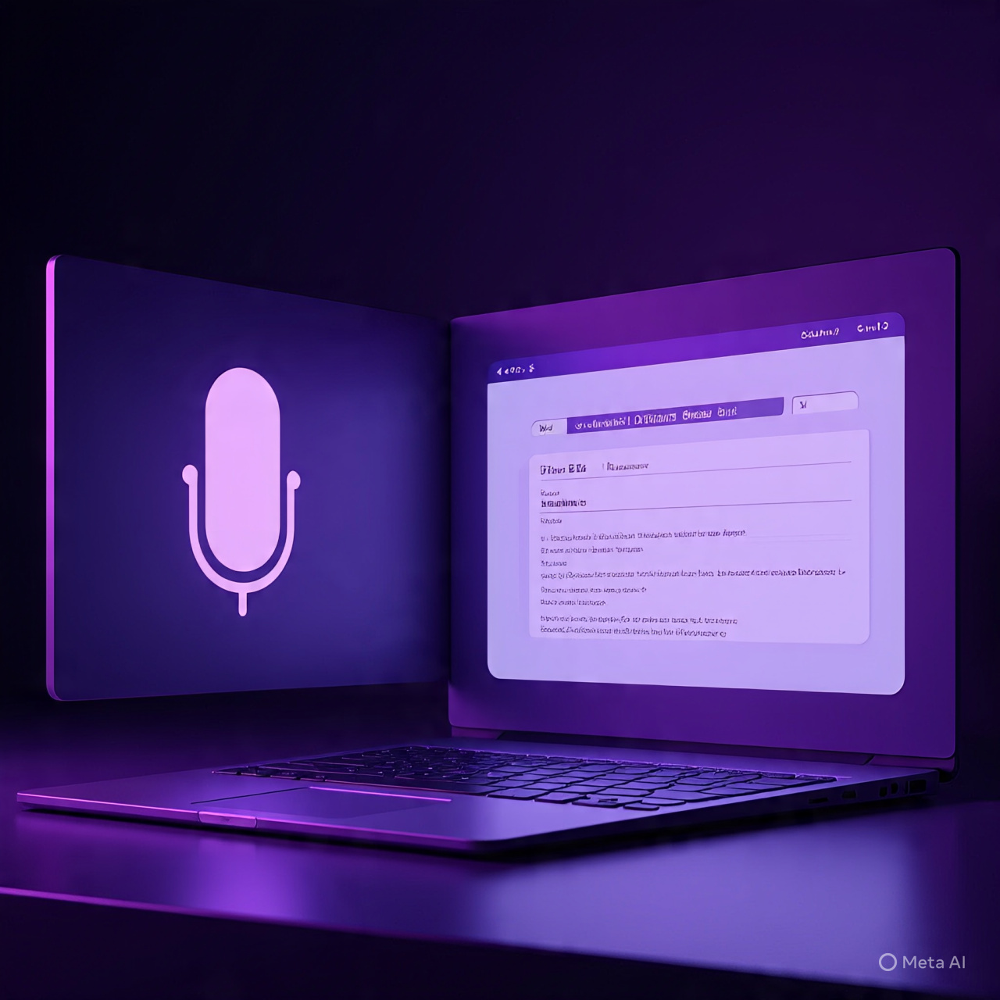

AI Accessibility Case Study
Speech to Text AI
Speech to Text AI is an accessibility-focused project that converts spoken audio into text and then produces useful summaries. It was built with the idea of supporting hearing-impaired and multilingual users while also turning lectures and conversations into reusable notes.

Overview
The motivation behind this project was to make spoken content easier to access and reuse. Audio often contains valuable information, but it is difficult to search, review, and summarize. This project explores how AI can bridge that gap.
Key Highlights
- Convert spoken input into readable text for easier review and access.
- Generate summaries that reduce the effort required to revisit long conversations or lectures.
- Support use cases around accessibility, multilingual understanding, and educational productivity.
- Strengthen my hands-on understanding of NLP and AI integration.
Tech Stack
- Python
- Speech Processing
- NLP
- Summarization
- API Integration
What I learned
Building around accessibility made me think beyond technical output and focus on whether the
final tool would be genuinely useful to real people.